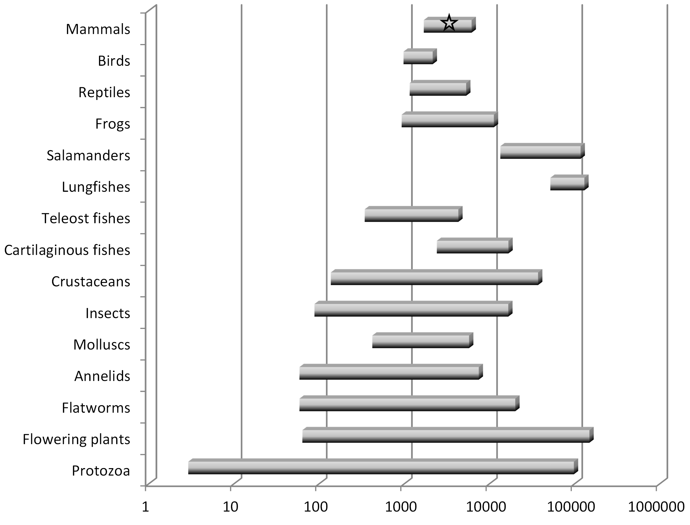
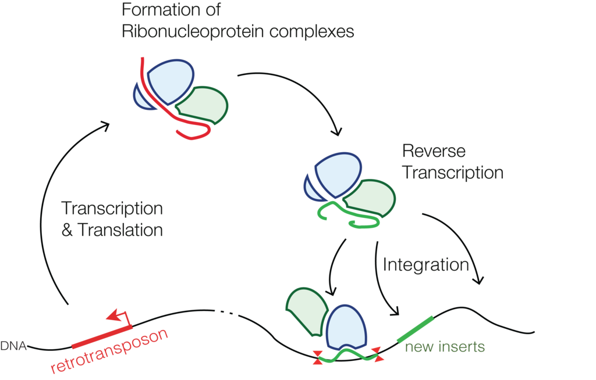
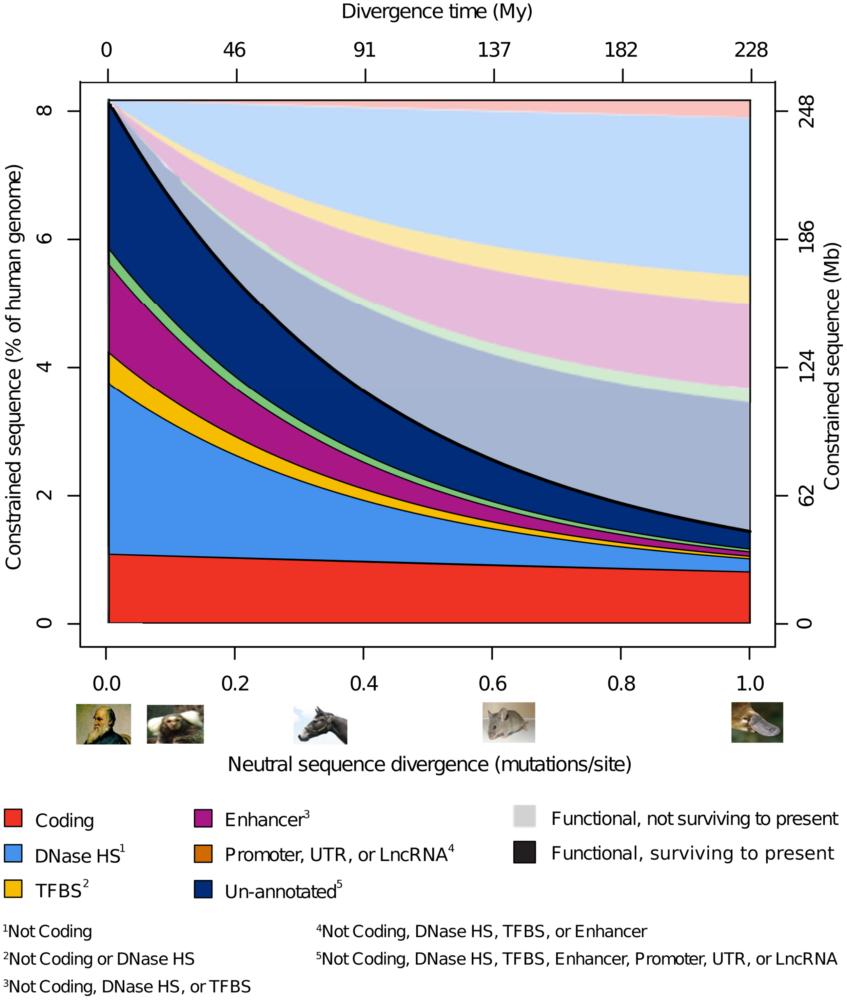

The genome, taken as a whole, has a profound influence on our biology. Many scientists, myself included, see it as a blueprint for the organism, or perhaps more accurately, as I explain here, a program that generates the entire organism. Why, then, have many geneticists concluded that about 90% of the human genome has no influence on the human organism whatsoever, that it’s “junk”? And if most of the genome is junk, how can it reveal anything about an individual’s ancestry?
I’ll explain why most genetic differences among individuals and populations are probably differences in junk DNA, and therefore, perhaps counter-intuitively, are incredibly informative about ancestry but say little about biology.
Why is most of the genome thought to be junk?
Clue #1: huge variation in eurkaryotic genome size
In the 1940’s and 50’s, biologists determined that the quantity of DNA was remarkably constant in cells from the same species, and therefore dubbed this quantity the “C-value”, but that it was quite variable across cells from different species. Importantly, the C-value, which we now know is the size of the genome (i.e., the number of nucleotides, or “letters”), bears little obvious relationship to the complexity of the organism. Some amoeba, for instance, which are single-celled organisms, have genomes that are 100x larger than the human genome (Eddy 2012). The human genome contains eight times more DNA than that of a puffer fish but 40 times less than that of a lungfish, and among the >200 salamander genomes analyzed as of 2014, all are between 4 and 35 times larger than the human genome (Palazzo and Gregory 2014). See Figure 1 (note the logarithmic scale).
Why would the “blueprints” of some simple organisms be so much larger than those of more complex ones, and why would the genomes of very closely related species often differ so dramatically? It is hard to escape the conclusion that a substantial fraction of a large genome has little, if any, influence on the phenotype of the organism. What, then, explains the expansion in genome size in some lineages?
Clue #2: pervasive parasitic DNA
A key property of DNA is that it can copy itself. Typically, this serves to make a new copy of the genome in a daughter cell, but sometimes sections of DNA copy themselves from one part of the genome into another, a type of mutation that often causes disease (Hancks & Kazazian, 2016). These sequences of DNA, termed transposons, are considered to be selfish or parasitic DNA because they have evolved features that increase their own replication at the expense of other genes in the genome, e.g., by inserting themselves into or near a gene and thus disrupting its function, consequently harming the organism itself.
There are two major classes of transposons. DNA transposons operate by a cut-and-paste mechanism – so-called “jumping genes” – and make up only about 3% percent of the human genome. Retrotransposons, in contrast, operate by a copy-and-paste mechanism, and therefore increase the size of the genome (see Figure 2). Retrotransposons make up at least 45% of the human genome (Cordaux and Batzer 2009).

{kind=link}
Alu and LINE-1 retrotransposons in the human genome insert perhaps as frequently as once every 20 births (Cordaux and Batzer 2009). Like other parasites, these copies can themselves make copies, and thus pose an extreme threat to other genes and to the organism itself. Many mechanisms have therefore evolved to neutralize them (Goodier, 2016). To illustrate: due to their activity over the last 150 million years, there are >500,000 LINE-1 elements in the human genome, but less than 100 copies are currently active, i.e., able to replicate within the genome (Cordaux and Batzer 2009).
The emerging picture, then, is that over evolution, lineages of retrotransposons have expanded, enlarging the genome (see Figure 3). Inserted elements that disrupted gene function were removed by negative selection (Rishishwar et al., 2017). Others were suppressed by cellular mechanisms, and then began to degrade due to accumulating mutations, becoming what we now call junk DNA (Rishishwar et al., 2017), although there is solid evidence that transposable elements have often been co-opted for the regulation of host genes (Chuong et al. 2017). Some particularly ancient retrotransposons might have degraded so extensively that they are no longer easily recognized. One analysis estimated that perhaps up to 70% of the human genome comprises such repetitive elements (Koning, Gu, Castoe, Batzer, & Pollock, 2011).

Clue #3 (which was misleading): only 1-2% of DNA codes for protein
The genetic code was cracked in the 1960’s: triplets of nucleotides (A,C,G,T) code for specific amino acids, the building blocks of proteins. Only about 1-2% of the genome codes for proteins, however. It was therefore often reported that the remaining 98-99% of the genome was junk, even though it was known as early as 1961 that some non-coding DNA regulated the expression of protein-coding DNA. By the early 2000’s, however, it was widely recognized that much non-coding DNA plays a critical regulatory role (Gerstein et al., 2007).
Thus, more than 1-2% of the genome is functional, but how much more?
Clue #4: about 90% of the genome shows no evidence of sequence conservation
The human genome has about 3 billion nucleotides. Every time the genome is copied, each nucleotide has a small probability that it will be miscopied, i.e., will mutate. In humans, there are a few dozen such mutations with each birth (Jonsson et al., 2017). Mutations that alter organism functions will undergo positive or negative selection. Because most such mutations are harmful — there are many more ways to break something than to improve it — they will typically disappear from the population via negative selection. A fertilized zygote with a mutation in a critical part of the genome might not even successfully develop. DNA sequences in which most mutations face negative selection are termed conserved or constrained.
Mutations that do not alter organism function, on the other hand, e.g., those that that occur in sequences with no influence on the phenotype, will not experience positive or negative selection and will therefore accumulate at a more-or-less constant rate. Junk DNA can therefore be distinguished from functional DNA by its lack of conservation across species.
Protein coding sequences exhibit a surprising degree of conservation. Yeast and humans diverged about a billion years ago, for example, yet 23% of yeast genes have homologs in humans (i.e., the genes derive from a common ancestor). Of these genes, the amino acid sequences overlap, on average, by about 32%. Even more remarkable, after replacing 414 critical yeast genes with their human homologs, 47% of the human genes functioned and enabled the yeast to survive (Kachroo et al. 2015).
A disadvantage of methods that assess DNA functionality by comparing degrees of sequence conservation across species is that they cannot identify functional sequences that might be recently acquired in a particular species. There might be functional sequences of DNA in the human genome, for instance, that do not appear in the genomes of chimps or other primates.
To assess what fraction of the human genome has been subject to negative selection on both long and short timescales, i.e., is constrained and is therefore likely to be functional, Rand et al. (2014) analyzed DNA sequences across the mammals in several functional classes (i.e., protein coding sequences vs. various types of regulatory sequences that might have been acquired recently). They found that 7.1– 9.2% of the human genome is presently constrained, fairly consistent with previous results that found that between 3% and 15% of the human genome was functional. As expected, protein coding sequences were highly constrained, whereas regulatory sequences experienced more rapid turnover (see Figure 4). This implies, of course, that >90% of human DNA is not functional, i.e., is junk (for similar recent estimates, see Ward and Kellis, 2012; Gulko et al., 2015; and references therein).

The ENCODE controversy
ENCODE is a large consortium of research groups whose goal is to “build a comprehensive parts list of functional elements in the human genome, including elements that act at the protein and RNA levels, and regulatory elements that control cells and circumstances in which a gene is active.” Their methods for identifying function primarily involve detecting evidence that a nucleotide participates in a biochemical RNA- and/or chromatin-associated event.
In 2012, ENCODE published their first analysis of functionality across the entire human genome. This was an enormously important milestone, but one claim stood out:
“These data enabled us to assign biochemical functions for 80% of the genome” (p. 57).
ENCODE appeared to be challenging all the evidence I’ve reviewed here that most of the genome is junk. Several news commentaries trumpeted the death of the junk DNA concept (see refs in Graur et al., 2013).
Biting critiques soon followed (Eddy, 2012; Doolittle, 2013; Graur et al., 2013; Niu & Jiang, 2013; and Palazzo & Gregory, 2014). These researchers noted that ENCODE employed an unusually broad definition of “function” based on the causal role account, which assigns “functions” to biochemical effects of nucleotide sequences, regardless of whether those effects evolved by natural selection. By ENCODE standards, the thumping sound of the heart is a “function” of the heart because the heart causes those sounds as part of a larger “noise-making” system, and the disabling effects of dangerous genetic birth defects are also “functional” (e.g., Graur et al., 2013). ENCODE’s approach does have some defenders, however (e.g., Germain et al., 2014).
Much of the ENCODE claim of functionality rests on evidence that a sequence is transcribed into RNA. According to the critics, transcription is an inherently noisy process that occurs in most of the genome regardless of evolved functionality, and that most transcripts are probably junk (e.g., Palazzo and Lee, 2015), although here, too, there is push back (e.g., Jandura and Krause, 2017).
Although the ENCODE claim of 80% functionality has found some defenders, I favor a definition of “function” that is based on natural selection, and therefore remain skeptical that most of the genome is functional in this sense.
Why is junk DNA ideal for revealing ancestry?
If most of the human genome is junk DNA, as it appears to be, then most genetic differences among individuals and populations are differences in junk DNA that have no biological significance. It turns out, though, that lack of biological significance is ideal for inferring ancestry.
Every person inherits half their DNA from each parent. Each parent, in turn, inherited half their DNA from each of their two parents, and so forth. Thus, each section of one’s DNA has its own unique lineage of ancestors. Due to random copying errors, a small number of changes in DNA sequence are introduced with each transmission from parent to offspring. Over generations each section of DNA will therefore acquire a unique “fingerprint” of variations. Sections of DNA that are inherited from a recent common ancestor will have very similar fingerprints, whereas those inherited from a more distant common ancestor will have more distinct fingerprints. By comparing an individual’s patterns of variations with a large database of such patterns across the entire genome, from individuals living around the world, it is possible to estimate which sections of DNA share recent common ancestors from which locations. Because random errors accumulate with each generation according to the mutation rate, the degree of similarity or difference also provides an estimate of the number of generations, and hence years, to those common ancestors.
To illustrate with my two daughters: They each inherited one chromosome 6 from me, and one from my wife. My dad has Norwegian ancestry and my mom has Ashkenazi Jewish ancestry. So, with 50-50 probability (and ignoring recombination), the chromosome 6 my daughters inherited from me might more closely resemble chromosome 6’s from Northern Europe or those from central European Jewish communities. My wife has Mexican American background, with a great-great grandparent with African background. So the chromosome 6 they inherited from her might more closely resemble those of Spanish, Portuguese, or other Europeans (with 90.6% probability), Native Americans (with 6.25% probability), or Africans (with 3.125% probability). See Figure 5.

Figure 6 is the output of one popular computer program for determining ancestry from DNA sequences. Each thin vertical line is one individual, and the different colors represent the fractions of their DNA sequences that more closely match individuals from different regions. My daughters would be mostly green, with some purple and a dash of red. President Obama would (probably) have a line that is about half green and half red.

Such inferences of ancestry for each section of DNA assume that the patterns of variation in those sections result only from descent with random copying errors due to the mutation rate. These assumptions hold for junk DNA. If there were processes that caused sequences with distant common ancestors to closely resemble each other, however, or sequences with recent common ancestors to sharply diverge from one another, a geneticist might mistakenly conclude that some sequences have more recent vs. more distant common ancestors than they actually do, and incorrectly infer ancestry. In functional DNA, this can occur due to positive, negative, or frequency dependent selection, i.e., factors related to the environment rather than ancestry. Conserved sequences – those under negative selection – will have fewer differences than expected given the mutation rate, for instance, and will therefore appear to have a more recent common ancestor than they actually do.
In short, in functional DNA, patterns of variation due to ancestry (and also to population history) are confounded with patterns of variation due to natural selection (e.g., Akey et al. 2004, Sabeti et al. 2006, Nielsen et al. 2009).
Using pure junk DNA to infer ancestry would be ideal, and several studies have used Alu insertions to investigate human ancestry and demography (Rishishwar et al., 2017). Functional and non-functional DNA are intimately intertwined in the genome, however, and it is not entirely clear which non-coding sequences are functional and which are not. Ancestry is therefore typically inferred using common genetic variants across the genome (for a readable introduction to inferring ancestry from genetic data, see Royal et al., 2010). Given that most DNA is junk, most common genetic variants should be junk, but are they?
Many studies have attempted to determine the functional consequences, if any, of coding and noncoding variants. Because the human genome is so poorly understood, these studies typically combine diverse sources of sequence, evolutionary, and functional information using use neural network and other machine learning methods to classify the variants according to their functional effects. One effort, Bromberg et al. (2013, p. 14255), concluded that:
[V]ariants in seemingly healthy individuals tend to be neutral or weakly disruptive for protein molecular function. These variant effects are predicted to be largely either experimentally undetectable or are not deemed significant enough to be published. This may suggest that nondisease phenotypes arise through combinations of many variants whose effects are weakly nonneutral (damaging or enhancing) to the molecular protein function but fall within the wild-type range of overall physiological function.
A recent review of methods assessing phenotypic effects of noncoding variants, on the other hand, was skeptical of their performance, concluding “A significant disconnect is found to exist between the statistical modelling and biological performance of predictive approaches” (Liu et al. 2019). Part of the problem is that the methods stumble with the severe class imbalance: the small number of noncoding variants with meaningful effects among a relatively large number without such effects.
In summary, evidence to date is consistent with the view that most human DNA sequences are junk and are evolving neutrally. Variants in these sequences are yielding a rich trove of information on human ancestry and population history, but don’t tell us much about our biology.
None of the foregoing calls into question the profound importance of functional DNA to human biology. I write about that here, highlighting a perspective on the genome that hasn’t gotten much press. And here I write about the relative influences of positive natural selection vs. random genetic drift on the evolution of the human lineage.
Concluding remarks
Each of our many ancestors indisputably lived at certain times and in certain places, and it’s pretty amazing that we can now glean those hard facts from spit in a tube. Living in a certain time and place, however, in and of itself, says nothing about the biology of those ancestors.